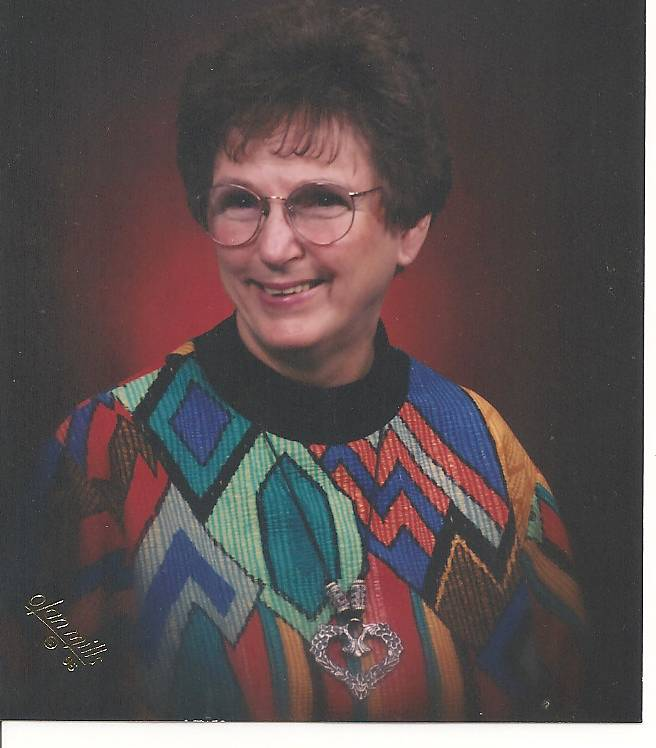
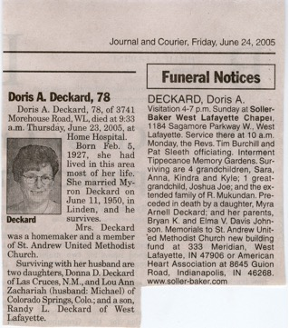
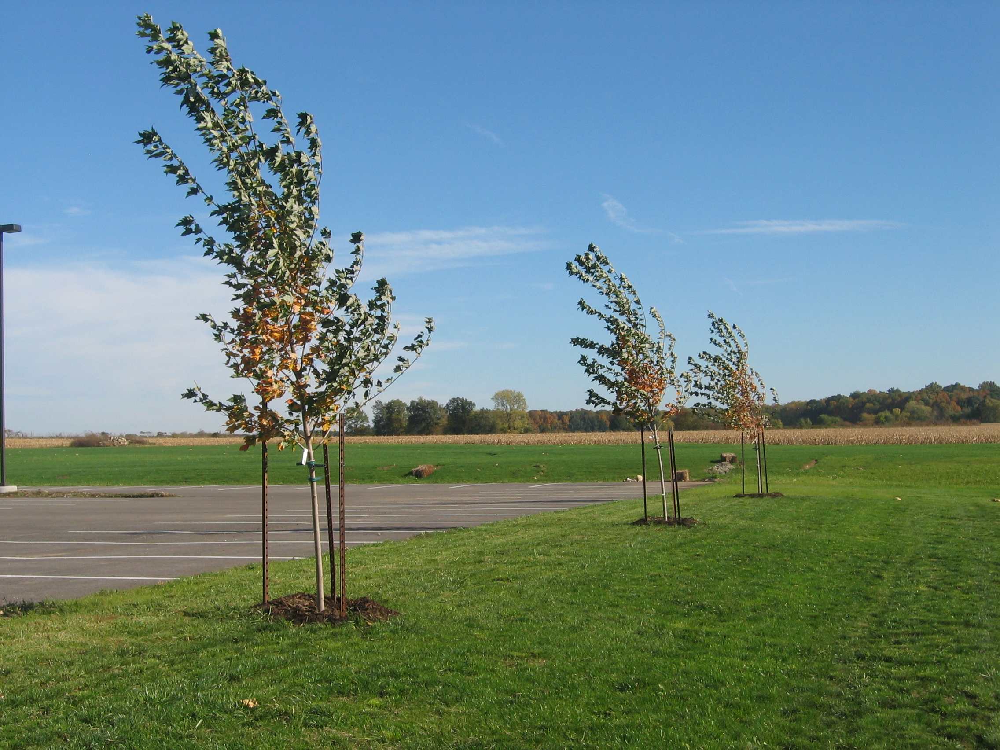
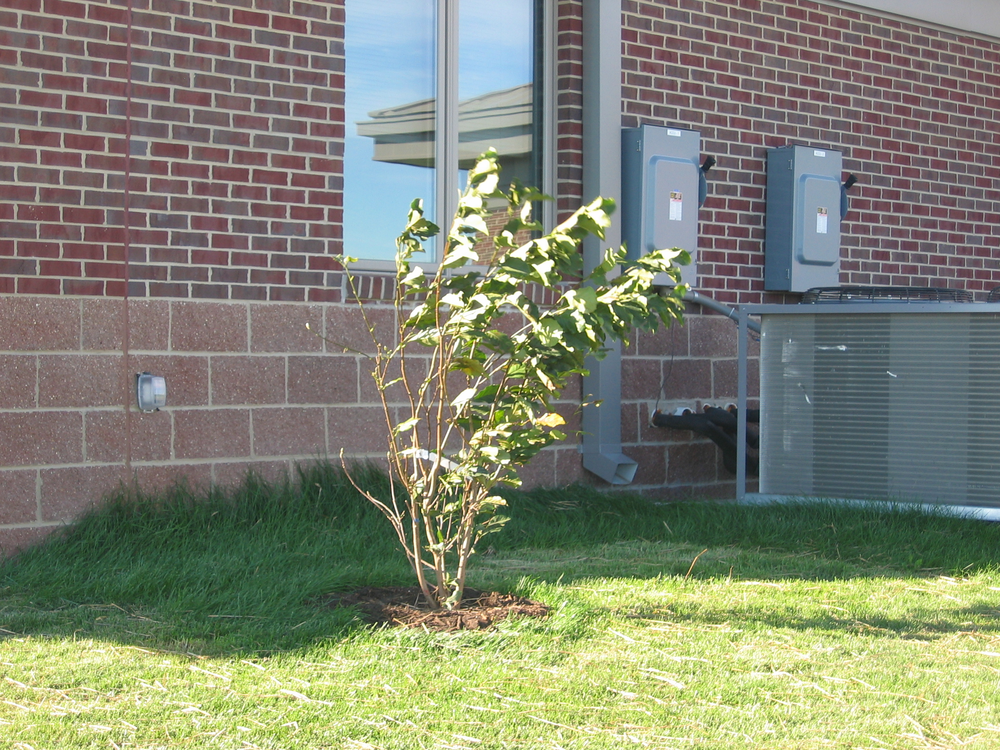

Doris A. Deckard
February 5, 1927 to June 23, 2005
Relationship to St. Andrew:
Doris was a long-time member of St. Andrew United Methodist Church. She was the daughter of Bryan K. and Elma V. Davis Johnson. Her Father was a Methodist Minister and served the Linden Church. She was a charter member of the Epworth Heights Methodist Congregation which merged with the St. Andrew EUB to form St. Andrew United Methodist Church.
Family:
Doris married Myron Deckard on June 11, 1950 in Linden, IN. They had four children: Donna Deckard (husband Steven) lives in Las Crusces, New Mexico, Lou Ann Zachariah (husband Michael deceased) lives in Colorado Springs, CO., Randy Deckard and an infant daughter , Myra are deceased. Doris and Myron had four grandchildren and four great-grandchildren.
According to her family and friends, Doris never met a stranger. She had a very special ability to make friends. She and Myron had a special relationship with 4 Indian families they knew as extended families. They are Mukunda and Hamsa from Pots Dam; NY, Dayananada and Prema from West Lafayette; Murithi and Lakshmi from Sunnyvale, CA; and Mani and Ruth Subrananian from Atlanta, Georgia. Among these families who are now American citizens, there are seven grandchildren and three great-grandchildren. Myron and Doris also have nieces and nephews from these families that they corresponded with regularly. When Doris was ten years old she began corresponding with a pen pal in England. As a result, Doris had a special relationship with two families in England since 1937.
Memorial: Fourteen maple trees and a Magnolia Shrub were planted at St. Andrew in 2007 in honor of Doris.


Three of the fourteen maple trees planted in honor of Doris Deckard.

Magnolia bush planted in honor of Doris Deckard.